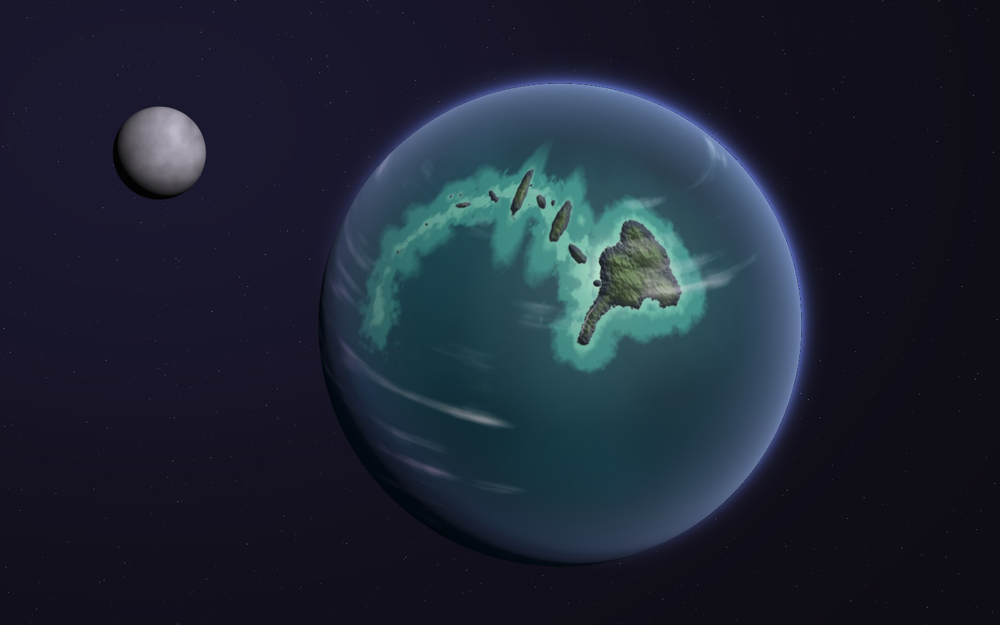
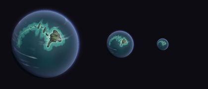
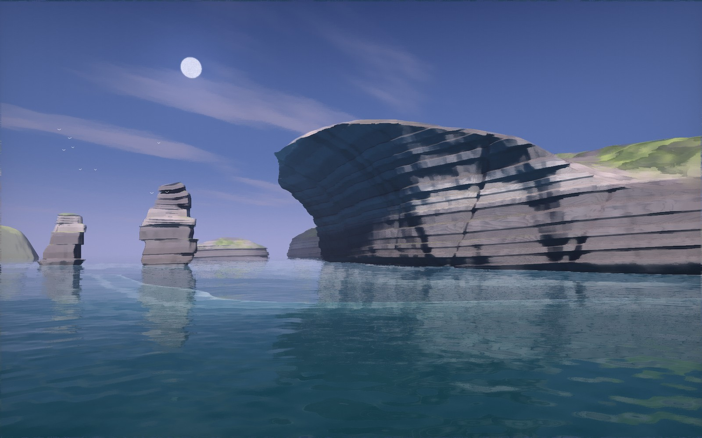
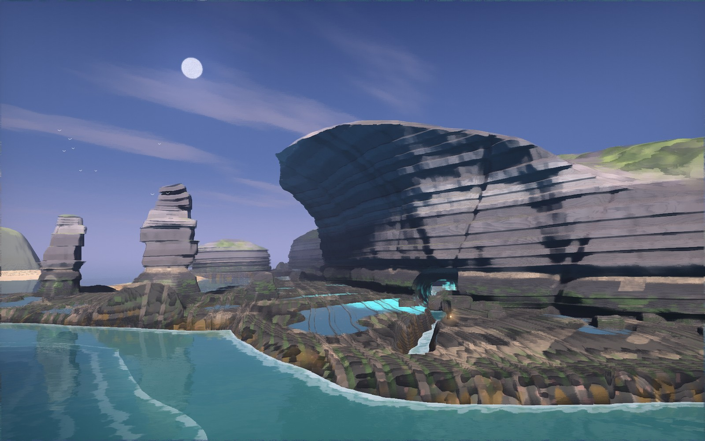
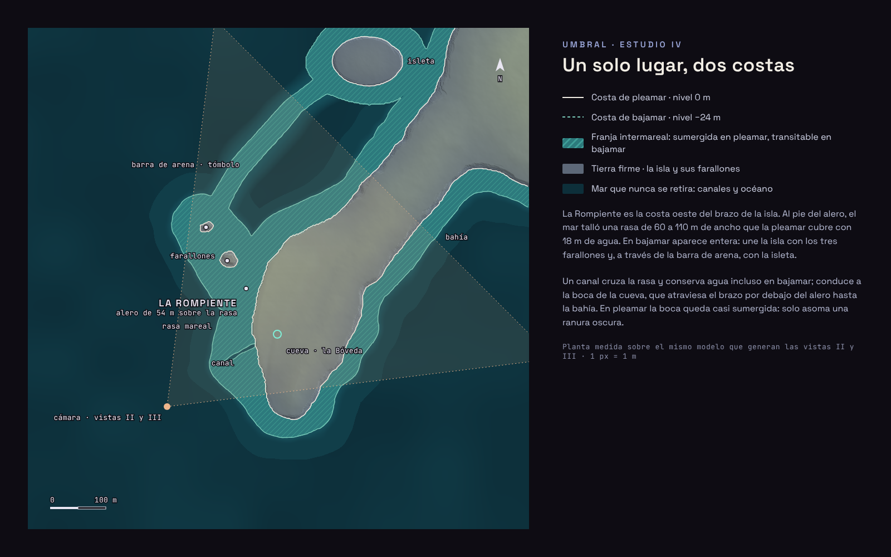

<title>Umbral · La Rompiente</title>
<link rel="preconnect" href="https://fonts.googleapis.com">
<link rel="stylesheet" href="https://fonts.googleapis.com/css2?family=Space+Grotesk:wght@400;500;600&family=JetBrains+Mono:wght@400;500&display=swap">
<style>
/* Una lámina de dirección de arte: las imágenes mandan, el texto acompaña al margen. Tema oscuro único, el de gevorah. */
:root{
  --night:#0e0c13; --ink:#15131d; --rule:#2a2738;
  --fg:#e9e6f2; --muted:#a3a7c2; --faint:#6f7290;
  --tide:#79c9b8; --warm:#efb68c; --violet:#9aa6d8;
  --display:'Space Grotesk',ui-sans-serif,system-ui,sans-serif;
  --mono:'JetBrains Mono',ui-monospace,SFMono-Regular,Menlo,monospace;
  color-scheme:dark;
}
*{box-sizing:border-box}
body{background:var(--night);color:var(--fg);font:400 16px/1.6 var(--display);margin:0}
.wrap{max-width:1240px;margin:0 auto;padding-inline:clamp(16px,4vw,48px);padding-block:40px 96px;display:grid;gap:88px}
.eyebrow{font:500 12px/1 var(--mono);letter-spacing:.22em;text-transform:uppercase;color:var(--violet)}
h1{font:600 clamp(40px,7vw,84px)/.95 var(--display);letter-spacing:-.02em;margin:14px 0 0;text-wrap:balance}
h2{font:600 clamp(26px,3.4vw,38px)/1.1 var(--display);margin:8px 0 0;letter-spacing:-.01em;text-wrap:balance}
h3{font:600 17px/1.3 var(--display);margin:0;color:var(--fg)}
p{margin:0;color:var(--muted);max-width:66ch}
p strong{color:var(--fg);font-weight:500}
figure{margin:0}
img{display:block;max-width:100%;height:auto;border-radius:3px}
figcaption{font:400 12.5px/1.5 var(--mono);color:var(--faint);margin-top:10px;letter-spacing:.02em}
.head{display:grid;gap:22px}
.head .lede{font-size:clamp(17px,1.6vw,20px);line-height:1.55;color:var(--muted);max-width:60ch}
.status{display:inline-flex;gap:10px;align-items:center;font:500 12px var(--mono);color:var(--warm);letter-spacing:.08em;text-transform:uppercase}
.status::before{content:"";width:8px;height:8px;border-radius:50%;background:var(--warm)}
.sec{display:grid;gap:28px}
.sec-head{display:grid;gap:6px;border-top:1px solid var(--rule);padding-top:22px}
.two{display:grid;grid-template-columns:minmax(0,1fr) minmax(0,1fr);gap:36px}
.notes{display:grid;gap:18px;align-content:start}
.notes > div{display:grid;gap:6px}
.side{display:grid;grid-template-columns:minmax(0,2.2fr) minmax(0,1fr);gap:36px;align-items:start}

/* comparador de mareas */
.tide{position:relative;user-select:none;touch-action:pan-y;border-radius:3px;overflow:hidden;aspect-ratio:16/10;background:var(--ink)}
.tide img{position:absolute;inset:0;width:100%;height:100%;object-fit:cover;border-radius:0}
.tide .low{clip-path:inset(0 0 0 var(--cut,50%))}
.tide .bar{position:absolute;top:0;bottom:0;left:var(--cut,50%);width:2px;margin-left:-1px;background:var(--fg);box-shadow:0 0 0 1px rgba(14,12,19,.4)}
.tide .knob{position:absolute;top:50%;left:var(--cut,50%);transform:translate(-50%,-50%);width:44px;height:44px;border-radius:50%;background:var(--night);border:2px solid var(--fg);display:grid;place-items:center;font:500 13px var(--mono);color:var(--fg)}
.tide .tag{position:absolute;top:14px;font:500 11.5px var(--mono);letter-spacing:.16em;text-transform:uppercase;padding:6px 10px;background:rgba(14,12,19,.62);border-radius:2px}
.tide .tag.l{left:14px;color:var(--fg)} .tide .tag.r{right:14px;color:var(--tide)}
.tide input{position:absolute;inset:0;width:100%;height:100%;opacity:0;cursor:ew-resize;margin:0}
.tide:focus-within .knob{outline:2px solid var(--tide);outline-offset:3px}
.switch{display:flex;gap:8px;flex-wrap:wrap}
.switch button{font:500 12px var(--mono);letter-spacing:.12em;text-transform:uppercase;background:transparent;color:var(--muted);border:1px solid var(--rule);border-radius:2px;padding:9px 14px;cursor:pointer}
.switch button:hover,.switch button:focus-visible{color:var(--fg);border-color:var(--muted);outline:none}
.switch button[aria-pressed="true"]{color:var(--night);background:var(--fg);border-color:var(--fg)}

.ledger{display:grid;grid-template-columns:minmax(0,1fr) minmax(0,1fr);gap:36px}
.ledger ul{list-style:none;margin:10px 0 0;padding:0;display:grid;gap:9px}
.ledger li{color:var(--muted);padding-left:18px;position:relative;max-width:60ch}
.ledger li::before{content:"";position:absolute;left:0;top:.62em;width:8px;height:2px;background:var(--faint)}
.ledger .chg li::before{background:var(--tide)}
.ledger .kp li::before{background:var(--fg)}

/* crítica */
.crit{display:grid;gap:0;border-top:1px solid var(--rule)}
.row{display:grid;grid-template-columns:minmax(150px,220px) 92px minmax(0,1fr);gap:24px;padding:18px 0;border-bottom:1px solid var(--rule);align-items:baseline}
.row p{max-width:none}
.v{font:500 11px var(--mono);letter-spacing:.12em;text-transform:uppercase;padding:4px 0;text-align:left}
.v.ok{color:var(--tide)} .v.mid{color:var(--warm)} .v.weak{color:#e58f9c}
.method{display:grid;gap:12px;font-size:15px}
.method p{color:var(--faint)}
.scale{display:flex;align-items:center;gap:20px;flex-wrap:wrap}
@media (max-width:820px){
  .two,.side,.ledger{grid-template-columns:minmax(0,1fr)}
  .row{grid-template-columns:minmax(0,1fr) auto;gap:6px 16px}
  .row p{grid-column:1/-1}
  .wrap{gap:64px}
}
@media (prefers-reduced-motion:no-preference){ .tide img.low{transition:clip-path .45s cubic-bezier(.3,.7,.2,1)} .tide .bar,.tide .knob{transition:left .45s cubic-bezier(.3,.7,.2,1)} .tide.drag img.low,.tide.drag .bar,.tide.drag .knob{transition:none} }
</style>

<main class="wrap">
  <header class="head">
    <span class="eyebrow">Gevorah · Small Worlds · Umbral · Ronda 5</span>
    <h1>La Rompiente</h1>
    <p class="lede">Un planeta oceánico pequeño, de mareas extraordinarias. En la costa oeste de su isla principal, el mar ha vaciado el pie del acantilado hasta dejar un alero de 54 metros que recuerda, sin imitarla, a una ola de piedra. Con la pleamar, todo lo que hay debajo desaparece. Con la bajamar, 24 metros más abajo, aparece un lugar.</p>
    <span class="status">Para evaluación · dirección no aprobada</span>
  </header>

  <section class="sec" id="orbita">
    <div class="sec-head"><span class="eyebrow">I · Vista orbital</span><h2>Una dorsal que se curva como la ola</h2></div>
    <figure></figure>
    <div class="side">
      <div class="notes">
        <div><h3>Lo que se lee primero</h3><p>No es La Rompiente, que a esta distancia mide un píxel. Es la <strong>dorsal submarina</strong>: un arco de bajíos turquesa sobre un océano casi entero de petróleo y azul profundo, con el archipiélago ensartado en él y la isla principal en la cabeza de la curva. La firma del planeta repite a escala planetaria el gesto del alero.</p></div>
        <div><h3>Lo que es el planeta</h3><p>Radio de unos 2,6 km. Casi todo océano, con cuencas profundas más oscuras, unos pocos bancos aislados en el otro hemisferio y una banqueta de hielo fino en el polo sur. Nubes escasas y peinadas por el viento, para no tapar la geografía. La luna, cercana y grande, es la que levanta las mareas.</p></div>
      </div>
      <figure class="notes">
        <div class="scale"></div>
        <figcaption>Prueba de lectura a 160, 64 y 28 px. A 28 px sigue apareciendo una mancha turquesa curva sobre azul oscuro.</figcaption>
      </figure>
    </div>
  </section>

  <section class="sec" id="mareas">
    <div class="sec-head"><span class="eyebrow">II · Pleamar &nbsp;/&nbsp; III · Bajamar</span><h2>Un único lugar en dos estados</h2></div>
    <div class="switch" role="group" aria-label="Estado de la marea">
      <button type="button" id="b-hi" data-cut="100" aria-pressed="false">Pleamar · 0 m</button>
      <button type="button" id="b-mid" data-cut="50" aria-pressed="true">Comparar</button>
      <button type="button" id="b-lo" data-cut="0" aria-pressed="false">Bajamar · −24 m</button>
    </div>
    <div class="tide" id="tide" style="--cut:50%">
      
      
      <span class="tag l">Pleamar</span><span class="tag r">Bajamar</span>
      <div class="bar"></div><div class="knob" aria-hidden="true">⇆</div>
      <input id="cut" type="range" min="0" max="100" value="50" aria-label="Deslizar entre pleamar y bajamar">
    </div>
    <figcaption>Misma cámara (7 m sobre la pleamar, mirando al nordeste), misma geometría, mismo sol. Solo cambia la altura del agua.</figcaption>

    <div class="two">
      <figure><figcaption>II · Pleamar. Las pistas de lo sumergido: el agua clara y turquesa sobre la rasa, la línea de espuma del cordón de arrecife y la franja oscura que la marea deja escrita en las paredes.</figcaption></figure>
      <figure><figcaption>III · Bajamar. Bajo el alero, en su sombra, las pozas guardan luz propia; un canal conserva agua y lleva hasta la boca de la cueva, que atraviesa el brazo de la isla.</figcaption></figure>
    </div>

    <div class="ledger">
      <div class="chg"><h3>Lo que cambia</h3><ul>
        <li>Emerge la rasa mareal: una plataforma casi plana de 60 a 110 m, con costillas de estrato, pozas y bloques caídos del alero.</li>
        <li>Bajo el alero aparece la Bóveda: pozas luminiscentes en la sombra y, al fondo, la cueva con su propia luz.</li>
        <li>El canal conserva agua y marca el camino; la figura con farol da la escala (1,8 m frente a 54 m de vuelo).</li>
        <li>Los farallones dejan de ser islotes: se unen a la isla, y aparece un tercero, rasado, que en pleamar no se ve.</li>
        <li>Detrás de los farallones asoma la barra de arena que lleva hasta la isleta.</li>
      </ul></div>
      <div class="kp"><h3>Lo que permanece</h3><ul>
        <li>La silueta de La Rompiente y los estratos que la atraviesan; los mismos niveles continúan en los farallones.</li>
        <li>La franja intermareal en las paredes: percebes arriba, algas en medio, laminarias abajo. Marca los 24 m en ambos estados.</li>
        <li>La muesca de pleamar al pie de cada pared, que explica por qué el acantilado vuela.</li>
        <li>La luna, el cielo, la luz y el encuadre: lo que se mueve es el agua, no la cámara.</li>
      </ul></div>
    </div>
  </section>

  <section class="sec" id="continuidad">
    <div class="sec-head"><span class="eyebrow">IV · Esquema de continuidad</span><h2>Dos costas sobre la misma planta</h2></div>
    <figure></figure>
    <figcaption>La planta se mide sobre el mismo modelo que generan las vistas II y III, metro a metro. No es un dibujo aparte.</figcaption>
  </section>

  <section class="sec" id="critica">
    <div class="sec-head"><span class="eyebrow">V · Crítica artística</span><h2>Qué funciona y qué todavía no</h2></div>
    <div class="crit">
      <div class="row"><h3>Personalidad</h3><span class="v ok">Sólida</span><p>La ola de piedra es memorable y sale de la erosión, no de un objeto: alero, muesca y rasa cuentan la misma historia. Desde este ángulo roza la lectura de concha o casco; falta un desprendimiento reciente en el labio que lo haga más áspero y menos perfecto.</p></div>
      <div class="row"><h3>Siluetas</h3><span class="v ok">Sólida</span><p>Alero y farallones se leen contra el cielo y entre sí; los farallones, apilados en capas desiguales, ya no parecen columnas. La isleta y las islas lejanas siguen siendo domos genéricos y necesitan su propio perfil.</p></div>
      <div class="row"><h3>Identidad cromática</h3><span class="v mid">A mejorar</span><p>El agua (petróleo, turquesa), la pizarra azulada y el cielo azul con lavanda funcionan, y no es un planeta violeta. El acento cálido es demasiado tímido en pleamar; en bajamar el farol lo resuelve. Los verdes de la isla tiran a ácidos y la luminiscencia turquesa debe usarse con más avaricia para no convertirse en un efecto.</p></div>
      <div class="row"><h3>Naturalidad de las formaciones</h3><span class="v mid">A mejorar</span><p>Estratos continuos entre acantilado y farallones, diaclasas, muesca de marea, costillas en la rasa y bloques caídos al pie: la geología es coherente. Pero los estratos se leen demasiado regulares, como láminas apiladas, y la cara inferior del alero es demasiado lisa. La textura del primer plano en bajamar todavía tiene ruido de procedimiento.</p></div>
      <div class="row"><h3>Coherencia del terreno</h3><span class="v ok">Sólida</span><p>Todo sale de un único modelo: La Rompiente es la cara oeste del brazo de la isla y su lomo desciende hacia el interior; la rasa sigue la costa; la barra une farallones e isleta. El cuerpo principal de la isla apenas se ve y está poco trabajado.</p></div>
      <div class="row"><h3>Composición</h3><span class="v mid">A mejorar</span><p>Tres planos claros: farallones a la izquierda, la ola a la derecha, la rasa delante; la luna equilibra el cielo. En pleamar el tercio inferior es agua demasiado vacía; en bajamar, en cambio, el primer plano compite con la Bóveda por la atención.</p></div>
      <div class="row"><h3>Escala</h3><span class="v mid">A mejorar</span><p>En bajamar la figura (ligeramente exagerada para que se lea) fija los 54 m del alero. En pleamar solo hay aves pequeñas: falta una referencia de escala que no dependa de la bajamar.</p></div>
      <div class="row"><h3>Potencial de exploración</h3><span class="v ok">Sólida</span><p>La marea da al lugar un reloj: canal, cueva y túnel hacia la bahía solo son transitables durante la bajamar, y los farallones y la isleta solo se alcanzan a pie entonces. Es una pregunta del tipo de Outer Wilds: ¿qué hay ahí cuando el agua se va y cuánto tiempo tengo?</p></div>
      <div class="row"><h3>Pleamar frente a bajamar</h3><span class="v ok">Sólida</span><p>No se ha quitado el agua: se revela un lugar con propósito (la Bóveda y la cueva) y conexiones nuevas, y lo que permanece se reconoce al instante. La pista en pleamar es débil: la ranura de la boca de la cueva casi no se ve y el cordón de arrecife rompe poco.</p></div>
    </div>
  </section>

  <section class="sec method">
    <div class="sec-head"><span class="eyebrow">Cómo se hizo</span></div>
    <p>Las vistas II y III son un blockout volumétrico pintado: un único volumen (isla, alero, rasa, farallones, barra, isleta) trazado por campos de distancia, con iluminación estilizada y un filtro final que agrupa el detalle en manchas. Sirve como base para una pintura encima, no como modelo. La vista orbital proyecta sobre la esfera un mapa construido con la misma planta.</p>
  </section>
</main>

<script>
(() => {
  const box = document.getElementById('tide');
  const range = document.getElementById('cut');
  const btns = [...document.querySelectorAll('.switch button')];
  const set = (v, from) => {
    box.style.setProperty('--cut', v + '%');
    range.value = v;
    btns.forEach(b => b.setAttribute('aria-pressed', String(+b.dataset.cut === +v)));
  };
  range.addEventListener('pointerdown', () => box.classList.add('drag'));
  window.addEventListener('pointerup', () => box.classList.remove('drag'));
  range.addEventListener('input', () => set(range.value));
  btns.forEach(b => b.addEventListener('click', () => set(b.dataset.cut)));
})();
</script>
